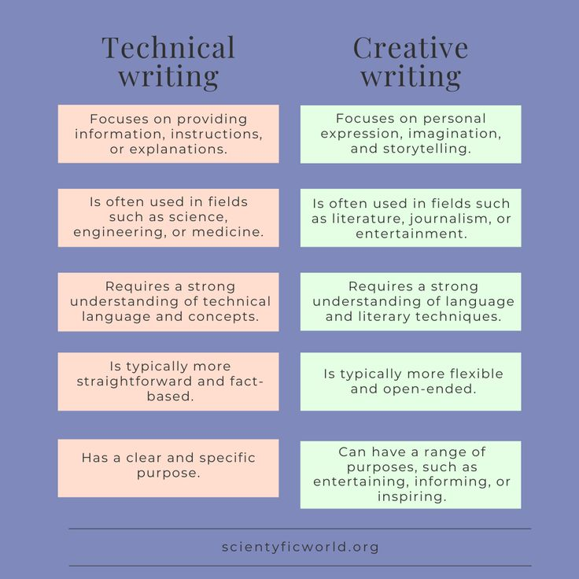
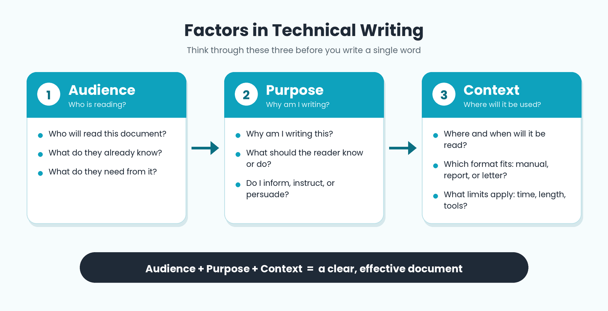

Introduction
Technical writing is a form of writing that communicates specialized information to a specific audience in a clear, objective, and structured manner. Unlike creative or academic writing, technical writing prioritizes clarity, accuracy, and usefulness above stylistic flourish. It is the language of manuals, reports, proposals, specifications, and instructions.
According to the Society for Technical Communication, technical writing is any form of communication that is "designed to explain how to do something, how something works, or how a particular process or procedure is performed."

Defining Technical Writing
Our professor defines technical writing as writing "characterized by certain formal elements such as its scientific and technical vocabulary, its use of graphic aids, and its use of conventional report forms." It uses technical vocabulary, tables, graphs, and figures to deliver specialized information.
Key Definition
Technical writing is writing that conveys technical or specialized information to a specific audience for a specific purpose, using clear, objective, and structured language. It is characterized by impartiality, objectivity, accuracy, conciseness, and an unemotional tone.
Characteristics of Technical Writing
- Impartial — It presents information without favoring any side or opinion.
- Objective — It relies on facts and evidence rather than emotions.
- Accurate — Every detail must be verified and correct.
- Concise — It uses the fewest words necessary without losing meaning.
- Unemotional — It avoids personal feelings, exclamations, and emotionally charged language.
- Audience-oriented — It is written for a specific reader with a specific need.
- Structured — It follows conventional report forms, headings, and formatting.
- Visual — It uses tables, graphs, and figures to support the text.
Purposes of Technical Writing
1. To Inform
Much technical writing exists to inform — to teach, explain, or document. This includes user manuals, instructional guides, safety data sheets, and specification documents.
Example
"To connect the app, copy the password from your settings page and paste it into the box labeled 'Secret Key.'" — this sentence informs the user of a specific step.
2. To Persuade and Influence
Technical proposals, feasibility studies, and recommendation reports aim to persuade readers to approve a plan, adopt a solution, or fund a project.
3. To Analyze Events
Analytical reports examine causes, effects, trends, and outcomes. Incident reports, research reports, and post-project evaluations fall under this category.
Factors to Consider in Technical Writing
Effective technical writers consider four major factors:
- Audience Analysis — Educational background, technical expertise, cultural considerations, professional context, and reading level.
- Purpose — Clear objective, measurable outcomes, information hierarchy, actionable content, value proposition.
- Context — Industry standards, legal compliance, organizational guidelines, time constraints, resource availability.

Real-World Applications
- Software: API documentation, user manuals, README files
- Healthcare: patient instructions, clinical trial reports, medical device manuals
- Engineering: specifications, safety guidelines, test reports
- Government: policy documents, legal notices, public information
- Business: proposals, business cases, memos, and reports
Self-Check
1. What are three core purposes of technical writing?
To inform, to persuade/influence, and to analyze events.
2. Name three characteristics of technical writing.
Impartial, objective, accurate, concise, unemotional, audience-oriented, structured.
3. Why is audience analysis important?
Because the tone, vocabulary, depth, and format must match the reader's expertise, background, and needs.
References
- Mitante, E. J. L. (n.d.). Course lecture materials: Technical Writing Overview, Purposes and ABCs. City College of Calapan.
- Mitante, E. J. L. (n.d.). Course lecture materials: Why People Write. City College of Calapan.
- Society for Technical Communication. (n.d.). Defining technical communication. STC.
- Purdue Online Writing Lab. (n.d.). Technical writing. Purdue University.